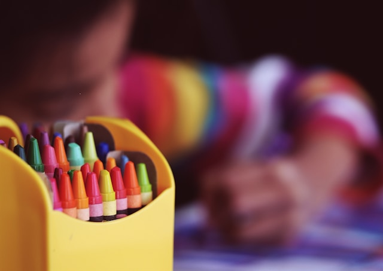
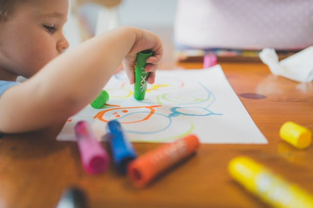

Informações Educacionais
A educação infantil desempenha um papel fundamental no desenvolvimento holístico de nossos filhos.
Desde os primeiros anos de vida, cada experiência educacional molda não apenas seus conhecimentos, mas também suas habilidades emocionais e sociais. Como pais, nosso papel é crucial nesse processo de aprendizagem.
Entender o impacto positivo de um ambiente educacional estimulante é essencial. Ele não apenas nutre a curiosidade natural das crianças, mas também promove o desenvolvimento cognitivo, emocional e motor. Ao proporcionar experiências variadas e enriquecedoras, estamos construindo a base para um futuro brilhante e bem-sucedido para nossos pequenos.
Neste espaço dedicado às informações educacionais, oferecemos recursos valiosos para ajudá-los a entender melhor como apoiar o crescimento integral de seus filhos. Explore nossos materiais educativos, guias práticos e dicas úteis que podem ser aplicadas no dia a dia. Aprender junto é uma jornada enriquecedora, e estamos aqui para apoiá-los em cada passo do caminho.
Juntos, podemos criar um ambiente onde o amor pelo aprendizado floresce e as crianças se desenvolvem confiantes, preparadas para enfrentar os desafios e abraçar as oportunidades que o mundo oferece.
A educação na primeira infância é um período crucial onde cada interação e experiência molda profundamente o desenvolvimento de nossos filhos. Desde os primeiros anos, as crianças absorvem informações de maneira única, construindo habilidades cognitivas, emocionais e sociais que serão fundamentais ao longo de suas vidas.
Como pais, nosso papel vai além de simplesmente fornecer suporte. Somos os primeiros educadores de nossos filhos, influenciando seu amor pelo aprendizado e sua capacidade de explorar o mundo ao seu redor com curiosidade e confiança. Ao criar um ambiente educacional estimulante em casa, estamos oferecendo um presente valioso que transcende o conhecimento acadêmico.
Ao explorar este espaço de informações educacionais, você encontrará recursos práticos e insights que podem enriquecer a jornada educacional de sua família. Desde estratégias para promover habilidades de linguagem e alfabetização até atividades que incentivam o desenvolvimento criativo e crítico, cada recurso foi projetado para apoiar o crescimento integral de seus filhos.
Lembre-se, cada momento compartilhado com seu filho é uma oportunidade de aprendizado. Ao participar ativamente de sua educação, você fortalece laços afetivos e estabelece bases sólidas para um futuro brilhante. Juntos, podemos cultivar um ambiente onde a aprendizagem seja uma aventura emocionante e contínua, preparando nossos filhos para enfrentar os desafios do mundo com confiança e determinação.
.jpg)
Recursos para Pais e Cuidadores
Recursos para Pais e Cuidadores: Apoio Essencial na Jornada Educacional
Os recursos disponíveis para pais e cuidadores desempenham um papel crucial na promoção de um ambiente educativo enriquecedor para as crianças. Ao proporcionar acesso a informações e ferramentas educacionais, capacitamos vocês, cuidadores dedicados, a desempenharem um papel ativo no desenvolvimento holístico de seus filhos.
Entendemos que cada criança é única, com necessidades individuais e ritmos de aprendizagem distintos. Por isso, oferecemos uma variedade de recursos adaptáveis e personalizáveis. Desde guias práticos que abordam desde a primeira infância até a adolescência, até atividades interativas que estimulam o desenvolvimento cognitivo e emocional, estamos aqui para apoiá-los em cada fase do crescimento de seus filhos.
Nosso objetivo é capacitar vocês a criar um ambiente familiar que inspire curiosidade, criatividade e resiliência. Os recursos educacionais não apenas fornecem ferramentas para o ensino acadêmico, mas também promovem habilidades essenciais para a vida, como resolução de problemas, colaboração e empatia.
Ao explorar nossos recursos, vocês encontrarão orientações sobre como integrar aprendizado no dia a dia, fortalecer vínculos familiares através de atividades educativas e criar momentos significativos que alimentem o amor pelo conhecimento em seus filhos. Juntos, podemos moldar um futuro brilhante, onde cada criança possa alcançar seu potencial máximo, guiada pelo apoio amoroso e educacional de seus pais e cuidadores.
Estamos aqui para apoiá-los em cada passo do caminho, porque acreditamos que o aprendizado é uma jornada emocionante que começa em casa.

Impacto da Primeira Infância
A primeira infância é uma fase de desenvolvimento crucial que estabelece as bases para o crescimento físico, emocional, social e cognitivo ao longo da vida de uma criança. Durante esses primeiros anos, as experiências vivenciadas têm um impacto profundo no desenvolvimento futuro, moldando habilidades essenciais e preparando o terreno para o sucesso acadêmico e pessoal.
Neste período vital, cada interação, estímulo e ambiente desempenham um papel fundamental na formação do cérebro em desenvolvimento. Investir na qualidade dos cuidados e na educação durante a primeira infância não só beneficia individualmente cada criança, mas também contribui para sociedades mais saudáveis e prósperas no futuro.
Entendemos a importância de apoiar pais, cuidadores e educadores nessa jornada crucial. Oferecemos recursos e orientações que exploram a ciência por trás do desenvolvimento infantil, destacando práticas eficazes para promover um ambiente seguro, estimulante e afetivo. Desde estratégias para fortalecer os vínculos familiares até programas educacionais que nutrem o crescimento holístico, estamos comprometidos em maximizar o potencial de cada criança durante essa fase fundamental.
Ao reconhecer e valorizar o impacto transformador da primeira infância, podemos colaborar para garantir que cada criança tenha a oportunidade de crescer em um ambiente que promova o amor pelo aprendizado, a resiliência e o bem-estar emocional. Juntos, estamos construindo um alicerce sólido para um futuro brilhante e promissor.
Primeiro Impacto na Educação: Construindo Bases Sólidas desde o Início
O primeiro impacto na educação ocorre nos primeiros anos de vida de uma criança, desempenhando um papel fundamental na formação de sua jornada acadêmica e além. Durante essa fase inicial, as experiências educacionais e de aprendizado têm o poder de moldar não apenas o desenvolvimento cognitivo, mas também emocional e social de uma criança.
Investir em educação desde os primeiros anos é essencial para estabelecer bases sólidas que promovam um amor pelo aprendizado e preparem os jovens para enfrentar os desafios acadêmicos futuros. A interação com cuidadores, a exposição a estímulos educacionais e o acesso a recursos apropriados são elementos cruciais que influenciam diretamente o desenvolvimento da linguagem, habilidades motoras e capacidades sociais.
Os primeiros anos também são uma oportunidade crucial para identificar e apoiar necessidades individuais, garantindo que cada criança receba a atenção e o suporte necessários para prosperar. Além disso, intervenções educacionais precoces têm demonstrado impactos positivos a longo prazo, reduzindo disparidades educacionais e promovendo igualdade de oportunidades desde o início da vida.
Ao reconhecer e valorizar o primeiro impacto na educação, podemos criar um ambiente onde cada criança possa alcançar seu potencial máximo, contribuindo não apenas para seu próprio desenvolvimento, mas também para o progresso educacional e social da sociedade como um todo.

Compartilhamento de Experiências na Educação Infantil